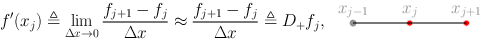
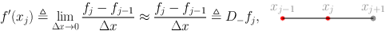
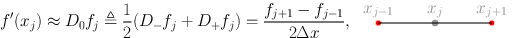

A First Scientific Computation¶
The 1st derivative of a function with finite differences Given a function \(f(x) : [a,b] \rightarrow \mathbb{R}\) we want to approximate \(f'(x)\) on a (uniform) grid on the \([a,b]\) interval by using a finite difference scheme in parallel.
Given an integer \(n \in \mathbb{N}\) we can subdivide the interval \([a,b]\) into intervals of length \(\Delta x = \frac{(b-a)}{n-1}\) with grid points \(\{x_j\}_{j=0}^{n} = \{x_j = a + j \Delta x\}_{j=0}^{n-1}\):
,
and consider the values \(\{f_j\}_{j=0}^{n-1} = \{f(x_j)\}_{j=0}^{n-1}\)
We can approximate the values of \(f'(x_j)\), for \(j=1,\ldots,n-2\), by using only the values of \(f\) at the knots \(\{f_j\}_{j=0}^{n-1}\)
The 1st derivative of a function with finite differences
The first derivative of \(f\) at \(x = x_j\) can be expressed by using knots for \(j' > j\) 
or equivalently by using knots for \(j' < j\) 
at last we can consider the arithmetic mean of previous two: 
Writing the sequential algorithm The sequential algorithms needs to break the approximation process into three parts
evaluate the derivative \(f'(x_i)\) for \(i=1,\ldots,n-2\),
evaluate the derivative at the left–hand side \(f'(x_0)\),
evaluate the derivative at the right–hand side \(f'(x_{n-1})\).
To have the same order of approximation at each point of the grid we need to use a one–sided formula for the steps 2 and 3, specifically $\(f'(x_0) \approx \frac{-3 f_0 + 4 f_1 - f_2}{2 \Delta x}, \quad f'(x_{n-1}) \approx \frac{3f_{n-1} -4 f_{n-2} + f_{n-3}}{2 \Delta x}\)$
Writing the sequential algorithm Then the sequential algorithm can be written as
void firstderiv1D_vec(int n, double dx, double *f, double *fx){
double scale;
scale = 1.0/(2.0*dx);
for (int i = 1; i < n-1; i++){
fx[i] = (f[i+1] - f[i-1])*scale;
}
fx[0] = (-3.0*f[0] + 4.0*f[1] - f[2])*scale;
fx[n-1] = (3.0*f[n-1] - 4.0*f[n-2] + f[n-3])*scale;
return;
}
The function takes as input
the number of grid points is \(n\),
the amplitude of such intervals \(\Delta x\),
the array containing the evaluation of \(f\) (intent: input),
the array that will contain the value of the derivative (intent: output)
Writing the parallel algorithm To implement the sequential differencing functions in parallel with MPI, we have to perform several steps
partition our domain \([a,b]\) among the processors,
each processor then computes the finite differences for all the points contained on that processor
To actually perform the second step, we need to observe that the end-points on each subdomain needs information that is not contained on the processor, but that resides on a different one, we need to communicate boundary data!
Red dots are halo data, the one we need to communicate, while gray dots are data owned by the process.
Writing the parallel algorithm The prototype of the function we want to write can be, in this case,
void firstderiv1Dp_vec(int n, double dx, double *f,
double *fx, int mynode, int totalnodes)
where
int nis the number of points per process,double dxthe amplitude of each interval,double *f, double *fxthe local portions with the values of \(f(x)\) (input) and \(f'(x)\) (output),int mynodethe rank of the current process,int totalnodesthe size of the communicator
We declare then the variables
double scale = 1.0/(2.0*dx);
double mpitemp;
MPI_Status status;
Writing the parallel algorithm Then we can treat the case in which we are at the beginning or at the end of the global interval
if(mynode == 0){
fx[0] = (-3.0*f[0] + 4.0*f[1] - f[2])*scale;
}
if(mynode == (totalnodes-1)){
fx[n-1] = (3.0*f[n-1] - 4.0*f[n-2] + f[n-3])*scale;
}
this approximate the derivative at the first and last point of the global interval.
Then, we can compute the inner part (the gray points) of the local interval by doing:
for(int i=1;i<n-1;i++){
fx[i] = (f[i+1]-f[i-1])*scale;
}
Writing the parallel algorithm The other case we need to treat is again the particular case in which we are in the first, or in the last interval. In both cases we have only one communication to perform
if(mynode == 0){
mpitemp = f[n-1];
MPI_Send(&mpitemp,1,MPI_DOUBLE,1,1,MPI_COMM_WORLD);
MPI_Recv(&mpitemp,1,MPI_DOUBLE,1,1,MPI_COMM_WORLD,&status);
fx[n-1] = (mpitemp - f[n-2])*scale;
}
else if(mynode == (totalnodes-1)){
MPI_Recv(&mpitemp,1,MPI_DOUBLE,mynode-1,1,MPI_COMM_WORLD,
&status);
fx[0] = (f[1]-mpitemp)*scale;
mpitemp = f[0];
MPI_Send(&mpitemp,1,MPI_DOUBLE,mynode-1,1,MPI_COMM_WORLD);
}
Writing the parallel algorithm Finally, the only remaining case is the one in which we need to communicate both the extremes of the interval
else{
MPI_Recv(&mpitemp,1,MPI_DOUBLE,mynode-1,1,MPI_COMM_WORLD,
&status);
fx[0] = (f[1]-mpitemp)*scale;
mpitemp = f[0];
MPI_Send(&mpitemp,1,MPI_DOUBLE,mynode-1,1,MPI_COMM_WORLD);
mpitemp = f[n-1];
MPI_Send(&mpitemp,1,MPI_DOUBLE,mynode+1,1,MPI_COMM_WORLD);
MPI_Recv(&mpitemp,1,MPI_DOUBLE,mynode+1,1,MPI_COMM_WORLD,
&status);
fx[n-1] = (mpitemp-f[n-2])*scale;
}
And the routine is complete!
Writing the parallel algorithm A simple (and not very useful) principal program for this routine can be written by first initializing the parallel environment, and discovering who we are.
MPI_Init( &argc, &argv );
MPI_Comm_rank( MPI_COMM_WORLD, &mynode );
MPI_Comm_size( MPI_COMM_WORLD, &totalnodes );
Then we build the local values of the \(f\) function
globala = 0;
globalb = 1;
a = globala + ((double) mynode)*(globalb - globala)
/( (double) totalnodes);
b = globala + ((double) mynode+1)*(globalb - globala)
/( (double) totalnodes);
f = (double *) malloc(sizeof(double)*(n));
fx = (double *) malloc(sizeof(double)*(n));
dx = (b-a)/((double) n);
for( int i = 0; i < n; i++){
f[i] = fun(a+((double) i)*dx);
}
Finally we invoke our parallel computation
Writing the parallel algorithm To check if what we have done makes sens we evaluate the error in the \(\|\cdot\|_2\) norm on the grid, i.e., \(\sqrt{\Delta x} \| \mathbf{f}' - \mathbf{fx}\|_2\) on every process
error = 0.0;
for(int i = 0; i < n; i++){
error += pow( fx[i]-funprime(a+((b-a)*((double) i))
/((double) n)),2.0);
}
error = sqrt(dx*error);
printf("Node %d ||f' - fx||_2 = %e\n",mynode,error);
Then we clear the memory and close the parallel environment
free(f);
free(fx);
MPI_Finalize();
Further modifications
In every case the function
void firstderiv1Dp_vecwants to exchange information between two adjacent processes, i.e., every process wants to “swap” is halo with its adjacent process. We can rewrite the whole function by using theMPI_Sendrecv_replacepoint-to-point communication routine.We can rewrite the entire program in an “embarrassing parallel” way, if every process has access to \(f\), and are assuming that all the interval are partitioned the same way, by using the knowledge of our
rankwe can compute what are the boundary elements at the previous and following process. Thus, no communication at all!
Full implementation¶
First we can implement the sequential version of the code. This simply applies the formulas from the previous section.
%%file ccode/sequentialderiv.c
#include <stdio.h>
#include <stdlib.h>
#include <math.h>
void firstderiv1D(int n, double a, double b, double *fx);
void firstderiv1D_vec(int n, double dx, double *f, double *fx);
double fun(double x);
double funprime( double x);
int main(int argc, char **argv){
double a,b,dx,*f,*fx;
int n;
if(argc != 2){
n = 20;
}else{
n = atoi(argv[1]);
}
a = 0.0;
b = 1.0;
f = (double *) malloc(sizeof(double)*n);
fx = (double *) malloc(sizeof(double)*n);
// firstderiv1D(n, a, b, fx);
dx = (b-a)/((double) n);
for( int i = 0; i <= n; i++){
f[i] = fun(a+((double) i)*dx);
}
firstderiv1D_vec(n, dx, f, fx);
for(int i = 0; i < n; i++){
printf("fx[%d] = %1.2f f'[%d] = %1.2f |fx - f'| = %1.1e\n",
i,fx[i],i,funprime(a+((b-a)*i)/n),abs(fx[i]-
funprime(a+((b-a)*((double) i))/((double) (n-1)))));
}
return 1;
}
void firstderiv1D(int n, double a, double b, double *fx){
double dx = (b-a)/((double) n-1);
double scale = 1.0/(2.0*dx);
for (int i = 1; i < n-1; i++){
fx[i] = (fun(a + (i+1)*dx) - fun(a + (i-1)*dx))*scale;
}
fx[0] = (-3.0*fun(a) + 4.0*fun(a + dx) - fun(a + 2.0*dx))*scale;
fx[n-1] = (3.0*fun(a+ (n-1)*dx) - 4.0*fun(a + (n-2)*dx) + fun(a + (n-3)*dx))*scale;
return;
}
void firstderiv1D_vec(int n, double dx, double *f, double *fx){
double scale;
scale = 1.0/(2.0*dx);
for (int i = 1; i < n-1; i++){
fx[i] = (f[i+1] - f[i-1])*scale;
}
fx[0] = (-3.0*f[0] + 4.0*f[1] - f[2])*scale;
fx[n-1] = (3.0*f[n-1] - 4.0*f[n-2] + f[n-3])*scale;
return;
}
double fun(double x){
return(x*x + 1);
}
double funprime( double x){
return(2*x);
}
Overwriting ccode/sequentialderiv.c
Code that can then be converted into its parallel version by dos
%%file ccode/parallelderiv.c
#include <stdio.h>
#include <stdlib.h>
#include <math.h>
#include "mpi.h"
void firstderiv1Dp_vec(int n, double dx, double *f,double *fx, int mynode, int totalnodes);
double fun(double x);
double funprime( double x);
int main(int argc, char **argv){
double globala,globalb,a,b,dx,*f,*fx, error;
int n, mynode, totalnodes;
MPI_Status status;
MPI_Init( &argc, &argv );
MPI_Comm_rank( MPI_COMM_WORLD, &mynode );
MPI_Comm_size( MPI_COMM_WORLD, &totalnodes );
n = 20;
globala = 0;
globalb = 1;
a = globala + ((double) mynode)*(globalb - globala)/( (double) totalnodes);
b = globala + ((double) mynode+1)*(globalb - globala)/( (double) totalnodes);
f = (double *) malloc(sizeof(double)*(n));
fx = (double *) malloc(sizeof(double)*(n));
dx = (b-a)/((double) n);
for( int i = 0; i < n; i++){
f[i] = fun(a+((double) i)*dx);
}
firstderiv1Dp_vec( n, dx, f, fx, mynode, totalnodes);
error = 0.0;
for(int i = 0; i < n; i++){
error += pow( fx[i]-funprime(a+((b-a)*((double) i))/((double) n)),2.0);
}
error = sqrt(dx*error);
printf("Node %d ||f' - fx||_2 = %e\n",mynode,error);
free(f);
free(fx);
MPI_Finalize();
return 0;
}
void firstderiv1Dp_vec(int n, double dx, double *f,double *fx, int mynode, int totalnodes){
double scale = 1.0/(2.0*dx);
double mpitemp;
MPI_Status status;
if(mynode == 0){
fx[0] = (-3.0*f[0] + 4.0*f[1] - f[2])*scale;
}
if(mynode == (totalnodes-1)){
fx[n-1] = (3.0*f[n-1] - 4.0*f[n-2] + f[n-3])*scale;
}
for(int i=1;i<n-1;i++){
fx[i] = (f[i+1]-f[i-1])*scale;
}
if(mynode == 0){
mpitemp = f[n-1];
MPI_Send(&mpitemp,1,MPI_DOUBLE,1,1,MPI_COMM_WORLD);
MPI_Recv(&mpitemp,1,MPI_DOUBLE,1,1,MPI_COMM_WORLD,&status);
fx[n-1] = (mpitemp - f[n-2])*scale;
}
else if(mynode == (totalnodes-1)){
MPI_Recv(&mpitemp,1,MPI_DOUBLE,mynode-1,1,MPI_COMM_WORLD, &status);
fx[0] = (f[1]-mpitemp)*scale;
mpitemp = f[0];
MPI_Send(&mpitemp,1,MPI_DOUBLE,mynode-1,1,MPI_COMM_WORLD);
}
else{
MPI_Recv(&mpitemp,1,MPI_DOUBLE,mynode-1,1,MPI_COMM_WORLD, &status);
fx[0] = (f[1]-mpitemp)*scale;
mpitemp = f[0];
MPI_Send(&mpitemp,1,MPI_DOUBLE,mynode-1,1,MPI_COMM_WORLD);
mpitemp = f[n-1];
MPI_Send(&mpitemp,1,MPI_DOUBLE,mynode+1,1,MPI_COMM_WORLD);
MPI_Recv(&mpitemp,1,MPI_DOUBLE,mynode+1,1,MPI_COMM_WORLD, &status);
fx[n-1] = (mpitemp-f[n-2])*scale;
}
return;
}
double fun(double x){
return(sin(x));
}
double funprime( double x){
return(cos(x));
}
Overwriting ccode/parallelderiv.c
For which we add again to the Makefile
parallelderiv: parallelderiv.c
$(MPICC) $(CFLAGS) $(LDFLAGS) $? $(LDLIBS) -o $@
and compile with make parallelderiv and run as
!(cd ccode && make parallelderiv)
!mpirun -np 4 ccode/parallelderiv
make[1]: ingresso nella directory "/home/cirdan/Documenti/RTDa-PISA/CorsoCalcoloParallelo2021/introtoparallelcomputing/intrompi/ccode"
mpicc -march=nocona -mtune=haswell -ftree-vectorize -fPIC -fstack-protector-strong -fno-plt -O2 -ffunction-sections -pipe -isystem /home/cirdan/anaconda3/envs/parallel/include -g -Wl,-O2 -Wl,--sort-common -Wl,--as-needed -Wl,-z,relro -Wl,-z,now -Wl,--disable-new-dtags -Wl,--gc-sections -Wl,-rpath,/home/cirdan/anaconda3/envs/parallel/lib -Wl,-rpath-link,/home/cirdan/anaconda3/envs/parallel/lib -L/home/cirdan/anaconda3/envs/parallel/lib parallelderiv.c -lm -ldl -o parallelderiv
make[1]: uscita dalla directory "/home/cirdan/Documenti/RTDa-PISA/CorsoCalcoloParallelo2021/introtoparallelcomputing/intrompi/ccode"
Node 0 ||f' - fx||_2 = 1.384681e-05
Node 1 ||f' - fx||_2 = 1.211868e-05
Node 2 ||f' - fx||_2 = 1.059319e-05
Node 3 ||f' - fx||_2 = 8.880167e-06